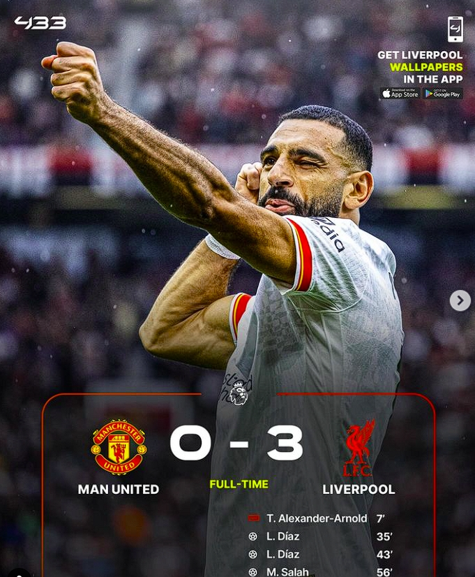

Duel klasik tersaji di Old Trafford yang mempertemukan tuan rumah ketika Manchester United menghadapi Liverpool dalam lanjutan Premier League, Minggu, 1 September 2024 malam.
The Reds nyatanya masih terlalu tangguh bagi Setan Merah. Anak asuh Arne Slot melesakkan tiga gol tanpa balas. Gol kemenangan Liverpool dicetak oleh Luis Diaz di menit 35 dan 42. Lalu satu tambahan gol dari Mohamed Salah pada menit 56.

Hasil dari kemenangan ini Liverpool naik ke peringkat kedua klasemen dengan mengoleksi sembilan poin. The Reds hanya terpaut selisih gol dari Manchester City yang menempati puncak klasemen. Dengan hasil ini liverpool menjadi satu satunya tim yang belum kebobolan pada musim ini.
Sedangkan Manchester United terpuruk ke Peringkat ke-14 dengan hanya 3 poin. Pada pertandingan ini salah satu pemain Manchester United yaitu Casemiro tampil cukup buruk, 2 gol yang dicetak oleh Diaz merupakan hasil dari kesalahan control dan Passing dari Casemiro.